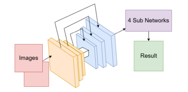
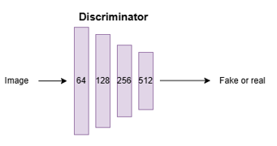

This GAN model adapts Niklaus et al.'s SepConv network to generate images and uses adversarial learning to train the generator. The adversarial learning should assist in creating frames as close to the inputs as possible. The SepConv model was chosen to act as the generator because it can transform a high-resolution image without issue.
 